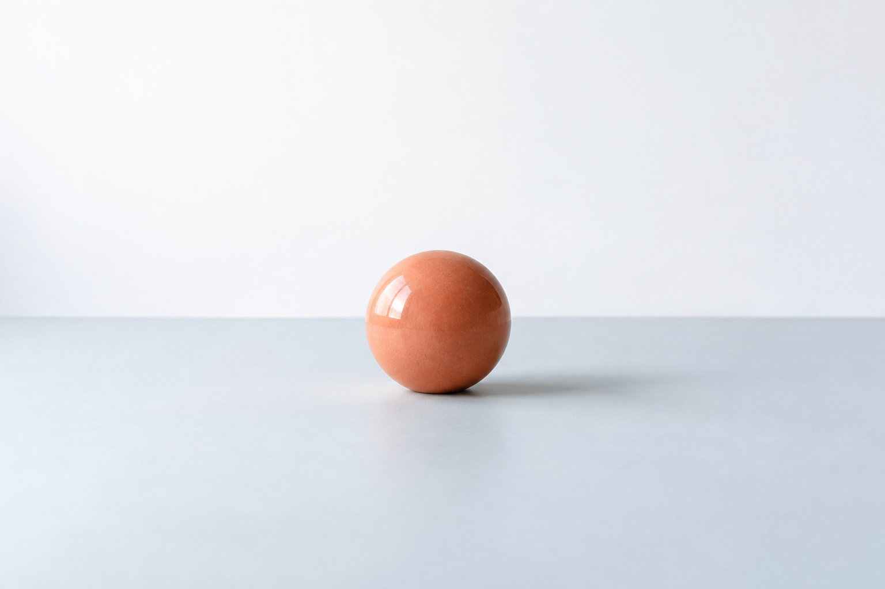

Composition Essentials
What you will make
Make a six-image series that uses subject placement, balance and negative space deliberately.
Before you begin
No prior course required. Bring a phone or camera, one object and available light.
See the edges
Try the exercise
Make two photographs of the same object. In the first, place it in the centre. In the second, move it toward one edge. Compare what changes.

What changed?
My next decision
Find the subject
Try the exercise
Choose one subject. Make three photographs that keep the subject clear while changing the background. Write what helped your eye find it.
What changed?
My next decision
Build visual balance
Try the exercise
Use two objects with different visual weight. Try a close arrangement and a wide arrangement. Compare where your eye pauses.
What changed?
My next decision
Work with negative space
Try the exercise
Give one subject a little empty space, then a lot. Keep light and viewpoint consistent. Describe what the space contributes.
What changed?
My next decision
Change the point of view
Try the exercise
Photograph one object from eye level, above and low down. Keep it recognisable. Choose the view that best communicates its shape.
What changed?
My next decision
Make a small series
Try the exercise
Make a six-image series that uses subject placement, balance and negative space deliberately. Sequence the images and explain one decision in each.